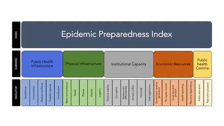

Continued from Part Two.

If we had an epidemic preparedness index, we could have a league ladder of epidemic preparedness. Then all we'd have to do is get to the top of the ladder and we'd be THE MOST PREPARED IN THE WORLD. #WTNTL?Introduction
Within the fabric of our knowledge, some ideas serve more local needs — identifying a particular item — while others acquire a structural role. Thus, if you’re a physicist, ideas like ‘mass’, ‘velocity’, ‘momentum’ and so on structure thinking in the field. If you want to do physics you get with the program and learn to think about the world through those concepts. These ideas can be critiqued and changed. But for as long as they’re current, they operate like standards. They supply some of the ‘rules of the game’ of the discipline.[1] And as I’ve argued previously, whether or not J.K. Galbraith was correct that post-war American capitalism combined private affluence with public squalor, something similar has happened to the fabric of ideas in our knowledge economy — that is those ideas that structure our thinking receive inadequate attention. And, as I’ll argue below, this is a particular problem with standards.
Legibility versus fidelity
All measurement seeks to render a particular thing legible. That a particular student gets a mark or an ATAR of 87 makes legible to others how good they were at a particular thing. But there’s always and inevitably a tradeoff between legibility and fidelity to to reality. If she had a migraine that day, or there was a badly worded question or the testing measured one kind of intelligence and not another then that’s not ideal as we say. Now let’s say you want to pick the most prospective students to secure the limited number of university places to become a doctor. To do so, you need legibility. And the simplest kind of legibility is all applicants’ marks. One can complicate the process — with special consideration, affirmative action, personality tests, interviews and so on. Each of these methods may improve things, or not and each will introduce their own tensions between legibility and fidelity to the underlying reality.
And, as we discussed in the previous part of this essay, whatever their inadequacies, comparative standards like school marks were purpose built by the institutions that then used them. But, like a pathogen escaping its petrie dish and then jumping the species barrier, once established, comparative standards can loose their moorings and turn up in unexpected places.[2] I’ve previously given the example of GDP being developed to understand macroeconomic dynamics and assist in macroeconomic management. Yet they became the default benchmark of economic wellbeing.
Legibility über alles
However, we’re in a strange kind of society in which being entertaining has become an apex cultural value. Apparently objective rankings make great clickbait. You know the kind of thing — which of the Queen’s grandchildren has the biggest stamp collection, loudest voice, smallest rodent for a pet, the stupidest hat, the biggest impact on quantum computing and so on.
Given how ‘infectious’ they are, it’s no surprise that comparative standards can also come into existence from outside the systems they infect. And there, like gut flora, they can do good and harm. So we’ve got league ladders popping up all over the place. The best countries for this or that, the most innovative companies, the 50 most influential thinkers, composers, poets, arch criminals and whatever. The Nobel Prize winners who were best at whistling. The World Economic Forum creates and/or makes use of so many indexes of country rankings that it has to lease an additional 100 private jets over and above all the CEO’s private jets (and the environmental activists’ hemp woven bicycles) just to fly them in.
Some indexes probably do some good — as I guess things like league ladders of political freedom and transparency do. However usually that line about laws being like sausages applies: it’s best not to look too closely at how they’re made. In particular composite indexes have all kinds of conceptual problems. In the area of wellbeing they add values that are incommensurate and more often than not mention the problem briefly before — via a quick piece of misdirection — they make the decision by default rather than design.[3] As for instance in this deliciously silly paragraph from the Canadian Index of Wellbeing:
There are many reasons for regarding one or another indicator as more important in some way or other, but what is missing is a good reason for assigning any particular indicator a weighting greater or less than that of some or all other indicators. The absence of such a reason justifies the equal treatment of all indicators at this time.
Oh what a tangled web
In any event, most of the time the legibility/fidelity tradeoff is given short shrift. Life’s too short and there’s bait to click, eyeballs to attract. This is often relatively harmless and the media gets its little sugar hits, people chat away about these rankings or that. And for those things that aren’t suited to the index treatment? Well nature abhors a vacuum. Here the demand is for the complex things in life to be rendered easily legible. It’s remarkable how often media or PR organisations figure in the development of these indexes — as they did for instance with Lateral Economics’ own one which was commissioned by Fairfax.
One of the most spectacular disasters is the Global Health Security Index — a collaboration between the Economist Intelligence Unit, NTI,[4] and Johns Hopkins Center for Health Security. Everyone was a winner getting to advance their missions. But the first iteration of the index published just before the arrival of the plague put the US and the UK at the top of their preparedness index. Here’s a quick graphic comparing early health costs of the pandemic with the ranking on the index.
Oops!
After explaining the non-correlation, Manjari Mahajan makes a more profound point, that the index sits atop a whole socio-technical system which presumes that the world will render itself legible to its technical methods.[5]
[B]etter indicators and more data would not have fixed the problem. Rather, the prevailing paradigm … narrowly conceptualises global health security in terms of the availability of a technical infrastructure to detect emerging infectious diseases and prevent their contagion, but profoundly undertheorises the broader social and political determinants of public health. The neglect of social and political features is amplified in instruments such as the GHS Index that privilege universalised templates presumed to apply across countries but that prove to be inadequate in assessing how individual societies draw on their unique histories to craft public health responses.
Amen to that, though Mahajan neglects the intellectual cost of such an approach. In a novel situation with profound implications for most of our social and economic systems, it’s critical for decisions to be made on the merits rather than because they’ve acquired the force of habit or because the people in the relevant positions say so, or were trained to say so. In the upshot, we had medical advisors playing the role of scientist for the camera while nevertheless harbouring the thinking and career aspirations of bureaucrats. Incredibly, New Zealand seems to have been unique in having official advisors who, within a few months suggested rethinking their whole plan because existing plans were based on influenzas being the problem and coronaviruses had different characteristics. Certainly our medical geniuses weren’t up to it and spent their time reassuring us that wearing masks was silly. Thanks Brendan. Thanks Paul. And we got a special effort from Nick who appears to have supported lockdowns but not to eradicate the virus and who informed us with great confidence — I think as late as May 2020 — that the virus wasn’t airborne. At least he looked serious. Any functioning set of institutions would have shunted him off-stage. But, being disastrously wrong has done nothing to harm his career as a go-to guy for comment on public health. But I digress.
Metasticising metricated mediocrity
Peter Bernstein: We were looking to reinvent the magazine, and the college rankings became part of that … An algorithm to capture the elusive quality of academic excellence finding those points of data and putting them into a ranking as you can appreciate is a complicated task yes full of value judgments, full of problems challenges dangers but we were undaunted and and proceeded. Malcolm Gladwell: I love that you're laughing about this. (“Lord of the Rankings”, Revisionist History.)
As big a disaster as it was for predicting pandemic readiness, the Global Health Security Index probably didn’t do much harm.[6] In truth, many of these indexes are harmless fun. But they’ve been devastating in one area: Higher education. I won’t quote chapter and verse in this piece, but rather refer you to Malcolm Gladwell’s recent crusading on the matter. As he reported on his podcast, it all started with the US News & World Report trying a new marketing pitch and, like the master’s apprentice, once the process had started, it couldn’t be stopped. The escalating managerialism of universities was no-doubt predestined to some extent by the increasing (neoliberal) managerialism of the zeitgeist and its propagation by government bureaucracies. But the indexes exerted a particular force via the extent to which they influenced student choice and university bureaucrats via the reputation of their university. Gladwell’s point is not just how bad the rankings are — that is how crude their proxies are for measuring quality. Nor is it just how they actively discriminate against colleges that won’t play their game and send their data in. His real gripe the invidious impact of the rankings in various ways — for instance in penalising colleges for taking on more disadvantaged students (who will have lower expected graduation than high SES students), and how the methods of the most successful colleges in dealing with disadvantaged students are completely invisible to the index, which uses proxies for good teaching that favour of colleges with famous alumni, large endowments and existing name recognition. The first half of this interview deals with the points more expeditiously than the podcast. Since the US News & World Report promotional gimmick, university rankings have gone global. They’re slipshod in similar ways, but they’re of immense importance not just to student choices of university and thus to ossifying existing status rankings of universities but also, even more disastrously to the way academics are chosen and promoted. And yet we could do so much better. I’ve written previously about how, in its haste to intensify competition, neoliberal university reform neglected the public goods of academia — peer review, replication and cooperative publishing. But here we have another public good — the comparative standard, the values embedded within it and propagated by it, and the quality of its execution. And I’ve not seen reformers think too hard about what might be done to minimise the damage and maximise any good they might do.
Footnotes
[1] I add by way of aside that this is a quite general observation about thought and the same can be said of ‘folk’ systems of practical knowledge about the world. [2] In a sense the use of school marks as criteria for post-school admissions gives us a case in point — they’re being used by another institution for its own purposes (though this use was an important consideration in the development of the standard.) [3] One I’ve documented at length is wellbeing indexes. They claim to go beyond the inadequacies of GDP or GDP per capita which is a worthwhile aim. But the vast majority of them — including ones built with great seriousness and professional input — are conceptually incoherent, not just in some details but at their very heart. As I’ve shown, this is obviously true of the worst of them like the Canadian Index of Wellbeing and Australia’s own Australian National Development Index. It’s slightly less obvious in the case of the OECD’s Better Life Index, but not much. At least with the Herald/Age Lateral Economics (HALE) Index of wellbeing, I’ve argued the heroic assumptions we make can be a feature not a bug in the sense that they’re made very transparently, and so can be critiqued and changed. Sadly this approach is very much in the minority. Another problem, and one that drives me crazy (and incidentally not one we’ve solved in our own index) is this. I’ve never liked the idea of the weight being given to each dimension of an index being predetermined. That’s because the relationship of different parts of our makeup is organic, not tamely linear. The way I try to make that vivid to people is to ask them to rank their favourite organs. Whatever one you name, there are an awful lot left that you’ll still need. To have half-way decent lives we need an awful lot of things to be working and working in harmony with each other. [4] On a quick squiz, NTI seems to be a philanthropically funded organisation that’s “transforming global security by driving systemic solutions to nuclear and biological threats imperiling humanity”. [5] I’ve made a similar point in a different context here. [6] It could have produced some complacency but everyone was conditioned to complacency by their sense of normality for way too long. And it could have spurred lower scoring countries to a bit more (useless?) action.
This was ranked near the top of the interesting to read index.
Thanks Homer! (Your cheque's in the mail ;)
This article is about a comparative standard (albeit a binary one) which was used to determine whether a pathogen was airborne or conveyed by droplets that was disastrously set in medicine and was responsible for hundreds of thousands if not millions of deaths.
This passage nicely illustrates a tension between the scalability of comparative standards and the legibility to more local needs. Gladwell makes the same point in the video to which I linked before — speaking of how particularly well adapted to helping disadvantaged kids some of the black colleges are — how they create a kind of family of support. But of course none of that is picked up by the comparative standard. Here's a similar story.